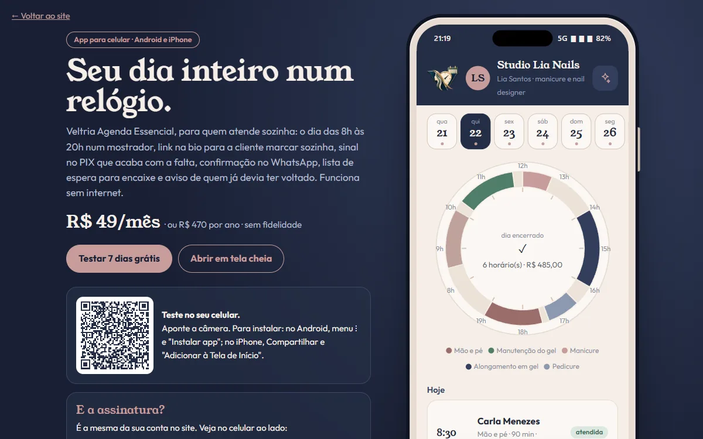
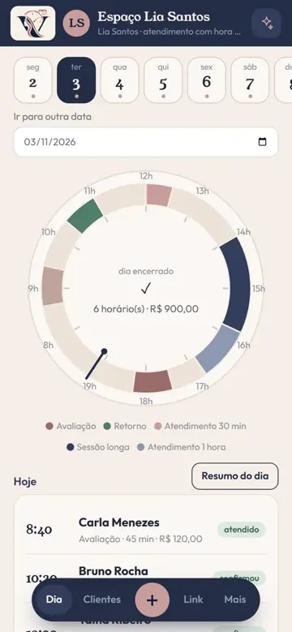
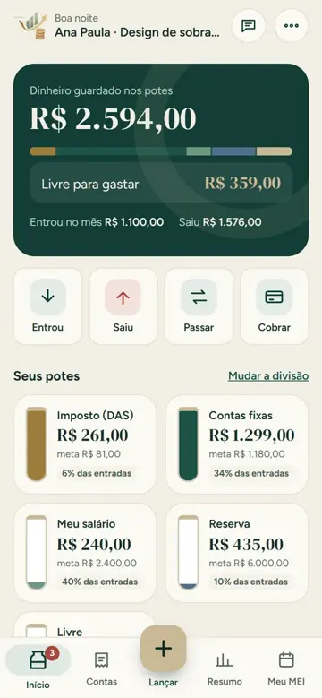
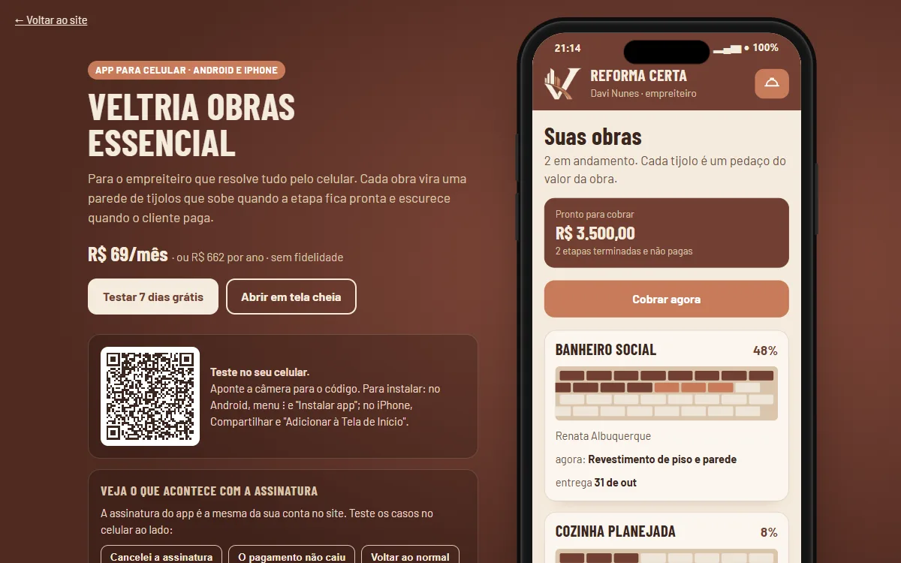
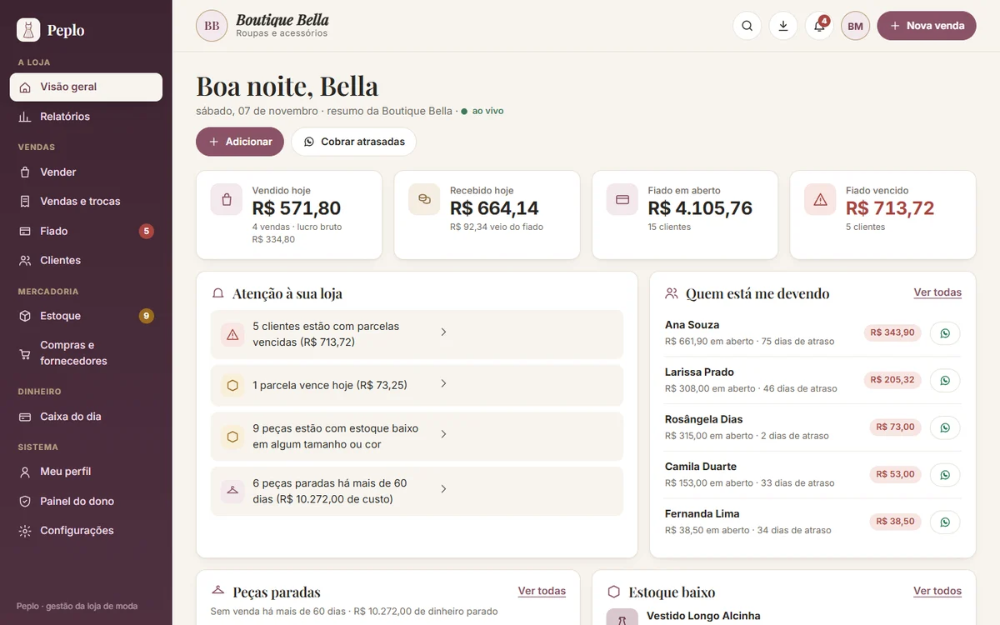
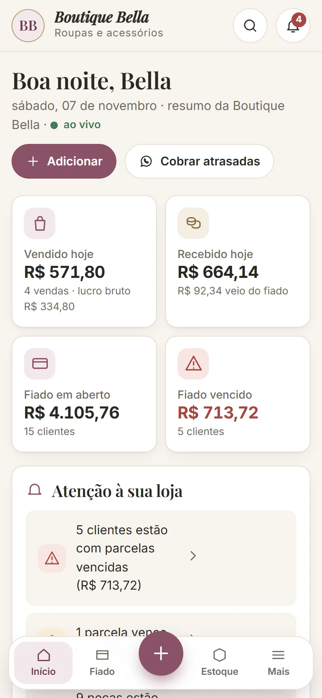
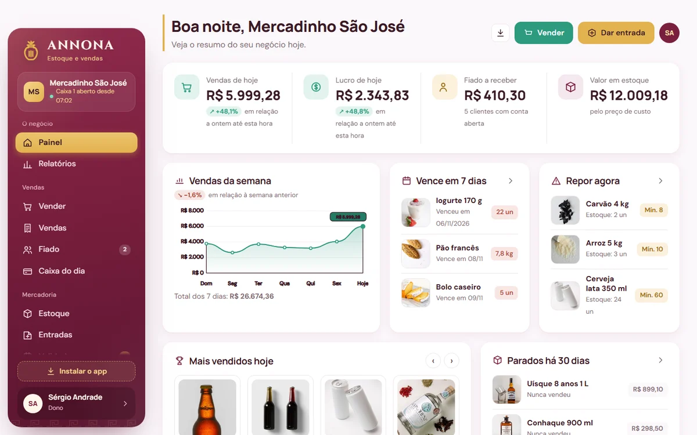
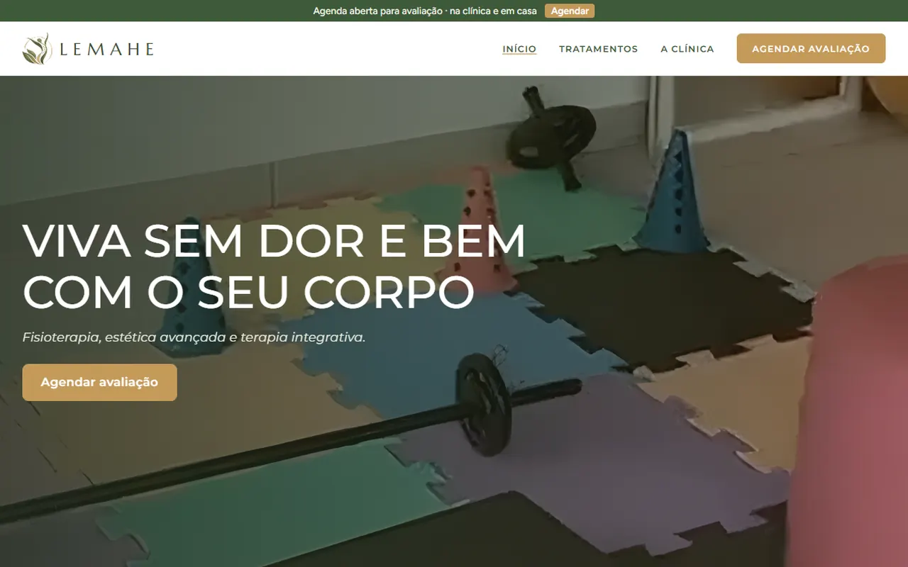
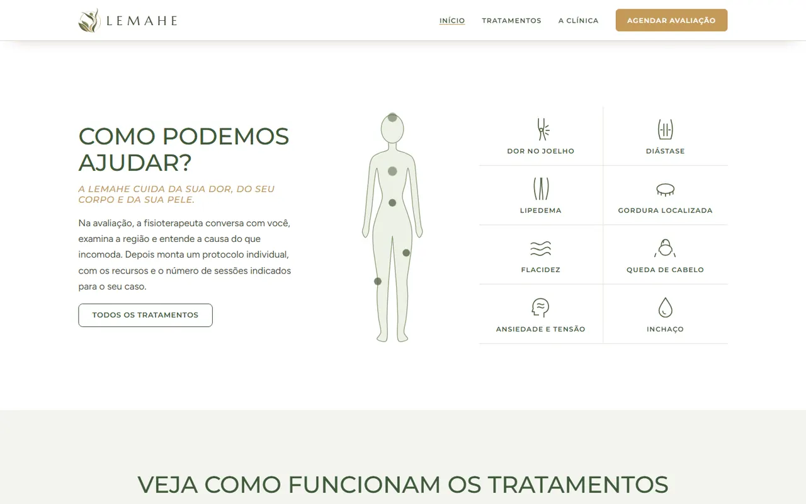
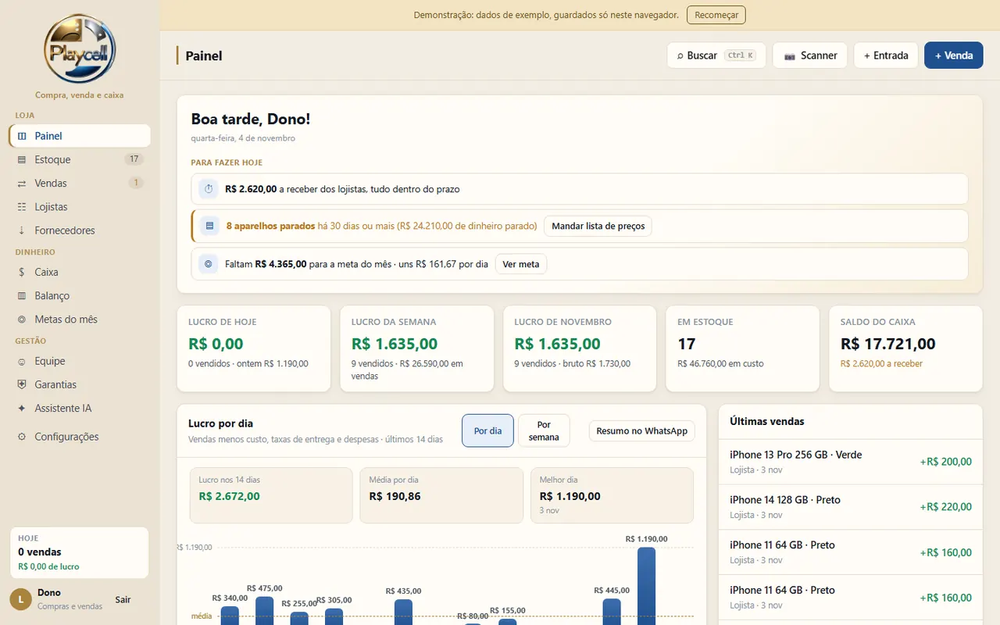

Blue Rose Express
O que a Blue Rose já construiu.
Seis sistemas prontos, quatro sites de exemplo, dois projetos para clientes e uma plataforma de arquitetura. Telas reais: passe por elas, use o índice e abra o que quiser testar.
Sistema pronto · quem atende com hora marcada
Veltria Agenda
O dia num relógio, link para a cliente marcar sozinha, sinal no PIX, confirmação no WhatsApp e lista de espera para encaixe.
Abrir a demonstraçãoTela da versão Essencial, com dados de exemplo.


Sistema pronto · autônomo e MEI
Veltria Financeiro
Cada real que entra é dividido em potes (imposto, contas, salário e reserva), com cobrança por PIX, lembrete no WhatsApp e o limite do MEI à vista.
Abrir a demonstraçãoTela da versão Essencial, com dados de exemplo.

Sistema pronto · obras e reformas
Veltria Obras
Orçamento pelo WhatsApp que vira obra, cobrança de cada etapa por PIX, diário com fotos e os gastos de cada obra.
Abrir a demonstraçãoTela da versão Essencial, com dados de exemplo.

Sistema pronto · loja de roupas
Peplo
Fiado com limite e bloqueio de quem deve, estoque por tamanho e cor, caixa do dia e liquidação.
Abrir a demonstraçãoTela com dados de exemplo.


Sistema pronto · mercadinho e mercearia
Annona
Estoque e vendas com código de barras, entrada pela nota (XML), validade por lote e o que está parado.
Abrir a demonstraçãoTela com dados de exemplo. Não emite nota fiscal.

Sistema pronto · construção e reforma
Atria
App de celular para orçar por m², diária ou empreitada, cobrar no Pix direto na sua conta, mostrar o antes e depois e achar trabalho na cidade. Básico R$ 39/mês ou Pro R$ 50/mês.
Abrir a demonstraçãoTela com dados de exemplo. Funciona sem internet.


Site de exemplo · construtora
Monolito Engenharia
Casas de alto padrão, com uma maquete em 3D que o visitante gira com o dedo ou o mouse.
Abrir o siteExemplo: marca, pessoas e preços fictícios.

Site de exemplo · corretora de imóveis
Ana Ribeiro
Página do imóvel com galeria, ficha e simulação, e a visita marcada num painel ao lado, sem sair da página.
Abrir o siteExemplo: marca, pessoas e preços fictícios.

Site de exemplo · advocacia empresarial
Bastos Lacerda
Busto escaneado em 3D e a conversa com o escritório marcada num painel ao lado.
Abrir o siteExemplo: marca, pessoas e preços fictícios.

Site de exemplo · odontologia
Dr. Henrique Sato
Clínica de implantes: teste de 60 segundos e o agendamento da avaliação num painel ao lado, sem sair da página.
Abrir o siteExemplo: marca, pessoas e preços fictícios.

Projeto para cliente · clínica de fisioterapia e estética
Clínica LEMAHE
Site sob medida, com os tratamentos explicados passo a passo e o agendamento da avaliação em poucos cliques.
Telas sem nomes, contatos ou endereço, para preservar a cliente e os pacientes.


Projeto para cliente · loja de celulares
PlayCell
Sistema feito só para esta loja: compra e venda de aparelhos, estoque por IMEI, lojistas, caixa, garantias e etiquetas com código de barras.
Tela da versão de demonstração, com dados de exemplo. Nenhum dado da loja aparece aqui.

Plataforma em desenvolvimento
Multimodal Architecture
Desenhe a planta em 2D, veja o mesmo projeto em 3D e exporte em PDF, DXF, SVG ou GLB.
Demonstração com dados fictícios, sem conta. Agentes de IA, pagamentos e equipes estão desativados.


Agora é com você
Qual desses é o seu próximo passo?
Nos sites de exemplo, as marcas, as pessoas e os preços são fictícios.